Приобретение практических навыков взаимодействия пользователя с
системой посредством командной строки.
Задание
Определите полное имя вашего домашнего каталога. Далее относительно
этого ката- лога будут выполняться последующие упражнения.
Выполните следующие действия: 2.1. Перейдите в каталог /tmp. 2.2.
Выведите на экран содержимое каталога /tmp. Для этого используйте
команду ls с различными опциями. Поясните разницу в выводимой на экран
информации. 2.3. Определите, есть ли в каталоге /var/spool подкаталог с
именем cron? 2.4. Перейдите в Ваш домашний каталог и выведите на экран
его содержимое. Опре- делите, кто является владельцем файлов и
подкаталогов?
Выполните следующие действия: 3.1. В домашнем каталоге создайте
новый каталог с именем newdir. 3.2. В каталоге ~/newdir создайте новый
каталог с именем morefun. 3.3. В домашнем каталоге создайте одной
командой три новых каталога с именами letters, memos, misk. Затем
удалите эти каталоги одной командой. 3.4. Попробуйте удалить ранее
созданный каталог ~/newdir командой rm. Проверьте, был ли каталог
удалён. 3.5. Удалите каталог ~/newdir/morefun из домашнего каталога.
Проверьте, был ли каталог удалён.
С помощью команды man определите, какую опцию команды ls нужно
использо- вать для просмотра содержимое не только указанного каталога,
но и подкаталогов, входящих в него.
С помощью команды man определите набор опций команды ls, позволяющий
отсорти- ровать по времени последнего изменения выводимый список
содержимого каталога с развёрнутым описанием файлов.
Используйте команду man для просмотра описания следующих команд: cd,
pwd, mkdir, rmdir, rm. Поясните основные опции этих команд.
Используя информацию, полученную при помощи команды history,
выполните мо- дификацию и исполнение нескольких команд из буфера
команд.
Теоретическое введение
В операционной системе типа Linux взаимодействие пользователя с
системой обычно осуществляется с помощью командной строки посредством
построчного ввода команд. При этом обычно используется командные
интерпретаторы языка shell: /bin/sh; /bin/csh; /bin/ksh. Формат команды.
Командой в операционной системе называется записанный по специальным
правилам текст (возможно с аргументами), представляющий собой указание
на выполнение какой-либо функций (или действий) в операционной
системе.Обычно первым словом идёт имя команды, остальной текст —
аргументы или опции, конкретизирующие действие. Общий формат команд
можно представить следующим образом:
<имя_команды><разделитель><аргументы>
Выполнение лабораторной
работы
Определим полное имя домашнего каталога. Перейдем в каталог /tmp.
Выведем на экран содержимое каталога /tmp. Для этого используем команду
ls с различными опциями. Для того, чтобы отобразить имена скрытых
файлов, необходимо использовать команду ls с опцией a. Чтобы вывести на
экран подробную информацию о файлах и каталогах, необходимо использовать
опцию l. (рис. @fig:001). (рис. @fig:002). (рис. @fig:003).
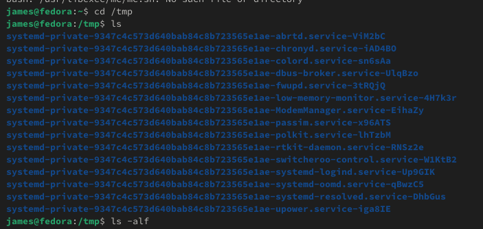
pwd
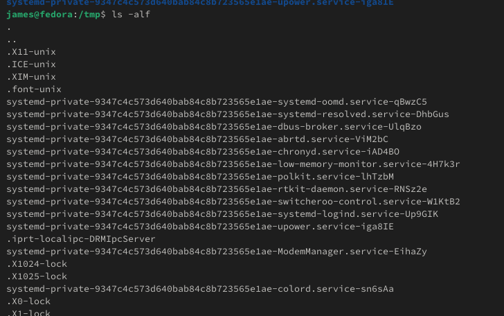
ls с опциямиls с опциями
ДПерейдите в Ваш домашний каталог и выведите на экран его
содержимое. Владелец файлов - я. (рис. @fig:005).
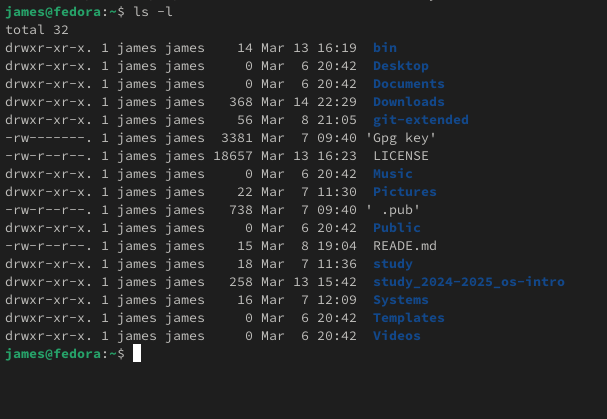
Содержимое домашнего
каталога
В домашнем каталоге создадим новый каталог с именем newdir. В
каталоге ~/newdir создадим новый каталог с именем morefun.(рис. @fig:006).
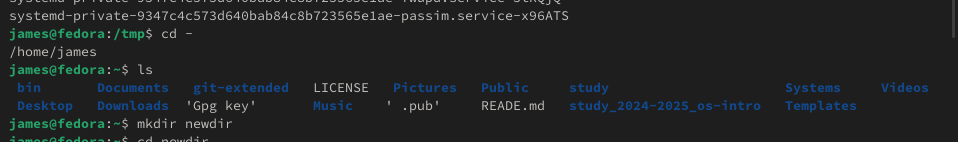
Создание каталогов
В домашнем каталоге создадим одной командой три новых каталога с
именами letters, memos, misk. Затем удалим эти каталоги(рис. @fig:007).
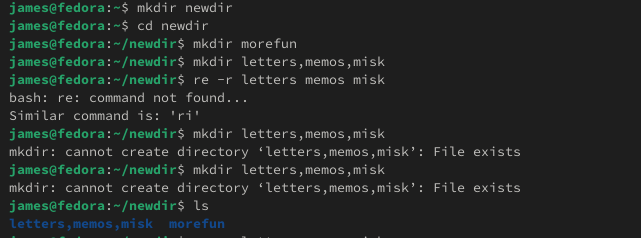
Создание каталогов
Попробуем удалить ранее созданный каталог ~/newdir командой rm.
Проверим, был ли каталог удалён. Удалим каталог ~/newdir/morefun из
домашнего каталога. (рис. @fig:008).
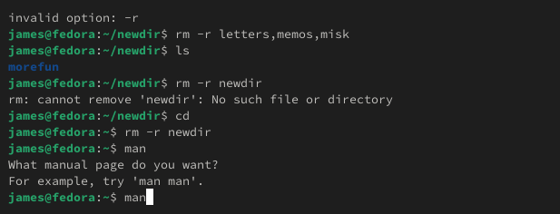
Удаление каталога
С помощью команды man определим, какую опцию команды ls нужно
использовать для просмотра содержимое не только указанного каталога, но
и подкаталогов, входящих в него. С помощью команды man определим набор
опций команды ls, позволяющий отсортировать по времени последнего
изменения выводимый список содержимого каталога с развёрнутым описанием
файлов. (рис. @fig:009). (рис. @fig:010).
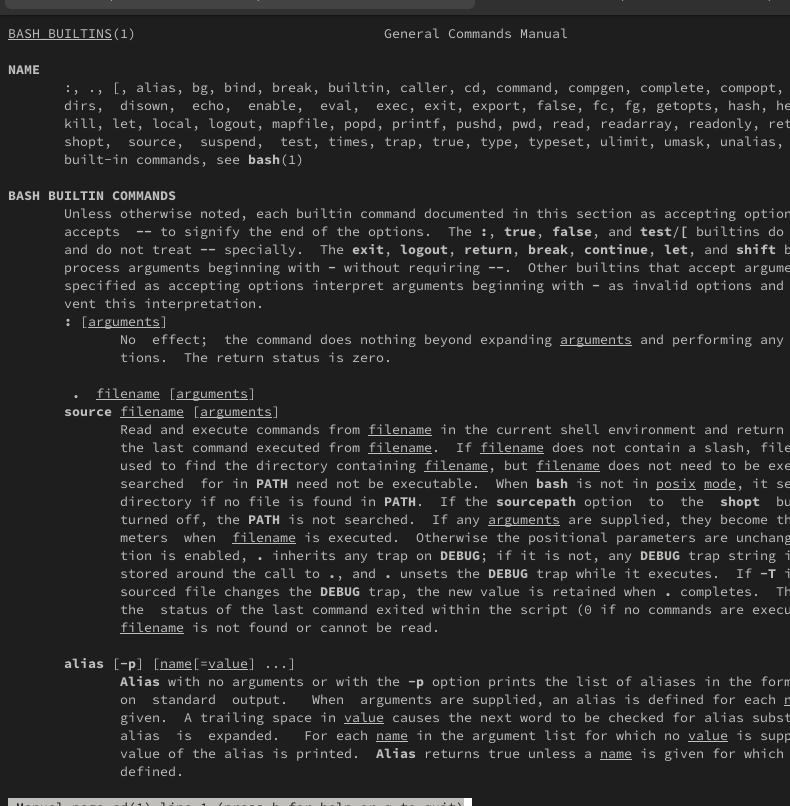
ls - R
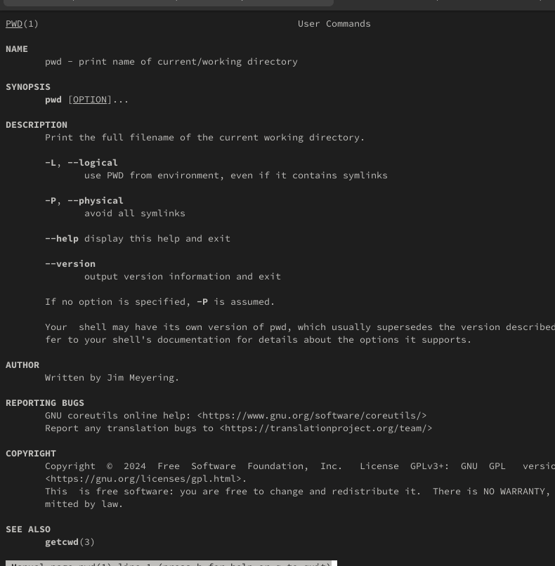
ls –time-style
Используtv команду man для просмотра описания следующих команд: cd,
pwd, mkdir, rmdir, rm. (рис. @fig:011). (рис. @fig:012). (рис. @fig:013). (рис. @fig:014). (рис. @fig:015).
cd
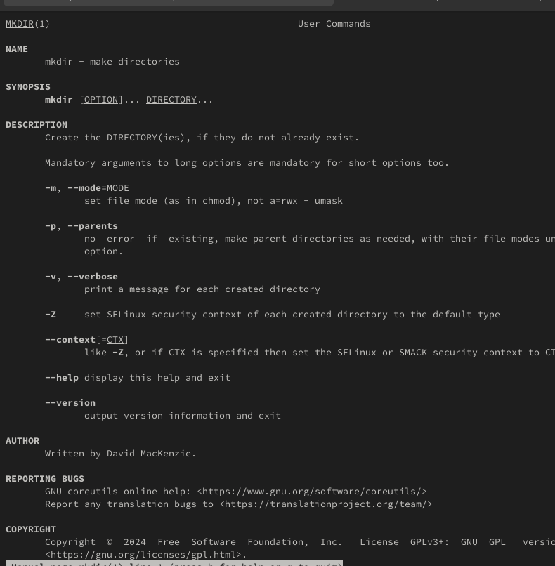
pwd
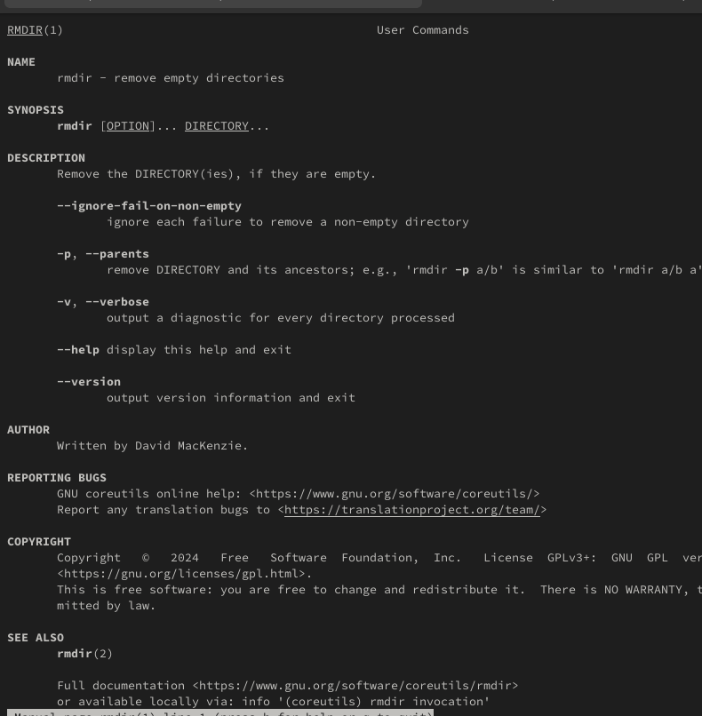
mkdir
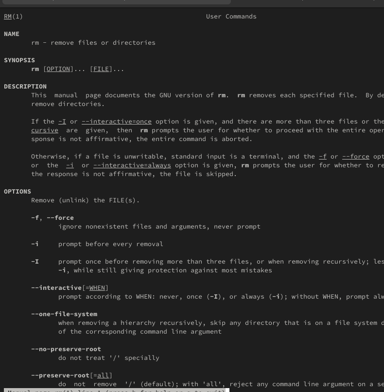
rmdir
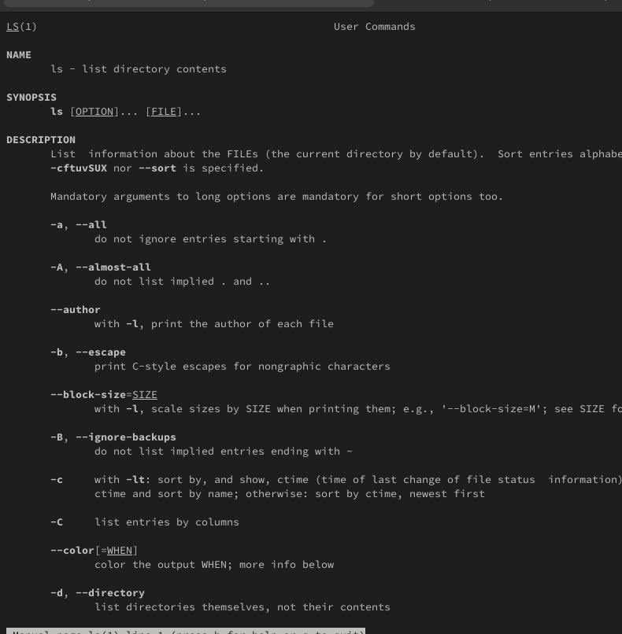
rm
Используя информацию, полученную при помощи команды history,
выполним мо- дификацию и исполнение нескольких команд из буфера команд.
(рис. @fig:016).
(рис. @fig:017).
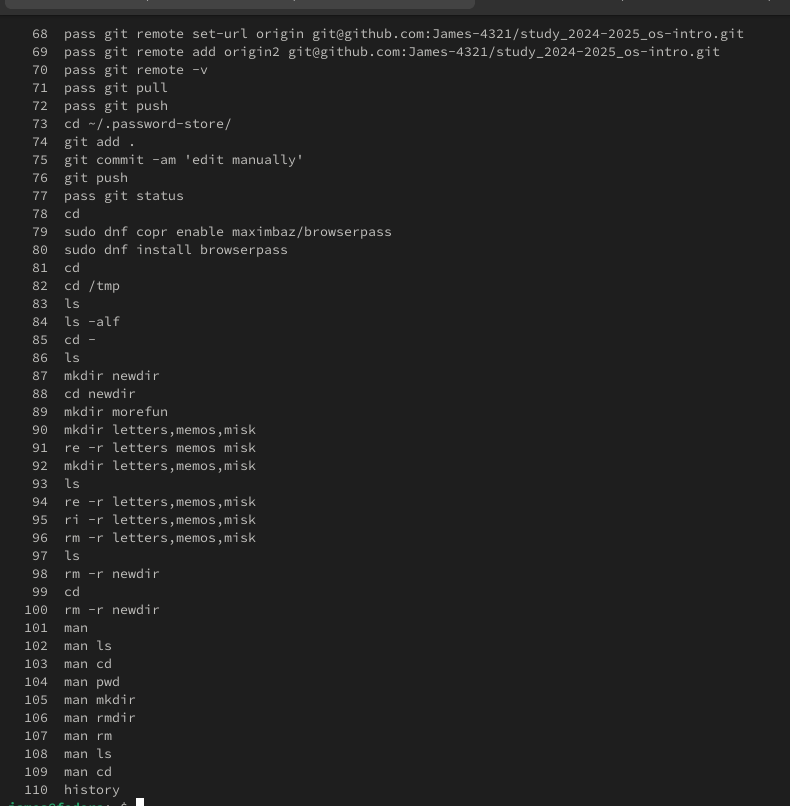
history
Контрольные вопросы
Что такое командная строка? Командная строка (или «консоль») – это
текстовый интерфейс между человеком и компьютером, в котором инструкции
компьютеру даются путём ввода с клавиатуры текстовых строк (команд).
Интерфейс командной строки противопоставляется управлению программами на
основе меню, а также различным реализациям графического интерфейса.
Команды, введённые пользователем, интерпретируются и выполняются
специальной программой — командной оболочкой (или «shell»
по-английски).
При помощи какой команды можно определить абсолютный путь текущего
каталога? Приведите пример. Для определения абсолютного пути к текущему
каталогу используется команда pwd (print working directory). Пример
(абсолютное имя текущего каталога пользователя dharma): (pwd результат:
/afs/dk.sci.pfu.edu.ru/home/d/h/dharma)
При помощи какой команды и каких опций можно определить только тип
файлов и их имена в текущем каталоге? Приведите примеры. При помощи
команды ls -F. (ls -F install-tl-unx/ newdir/ work/ Видео/ Документы/
Загрузки/ Изображения/ Музыка/ Общедоступные/ ‘Рабочий стол’/
Шаблоны/)
Каким образом отобразить информацию о скрытых файлах? Приведите
примеры. С помощью команды ls -a. (ls -a . .bash_logout .cache .gnupg
.local .pki .var .vboxclient-draganddrop.pid .wget-hsts Документы Музыка
Шаблоны .. .bash_profile .config install-tl-unx .mozilla .ssh
.vboxclient-clipboard.pid .vboxclient-seamless.pid work Загрузки
Общедоступные .bash_history .bashrc .gitconfig .lesshst newdir
.texlive2022 .vboxclient-display-svga-x11.pid .vscode Видео Изображения
‘Рабочий стол’)
При помощи каких команд можно удалить файл и каталог? Можно ли это
сделать одной и той же командой? Приведите примеры. Команда rm
используется для удаления файлов и/или каталогов. Чтобы удалить каталог,
содержащий файлы, нужно использовать опцию r. Без указания этой опции
команда не будет выполняться (rm -r abc). Если каталог пуст, то можно
воспользоваться командой rmdir. Если удаляемый каталог содержит файлы,
то команда не будет выполнена — нужно использовать rm - r
имя_каталога.
Каким образом можно вывести информацию о последних выполненных
пользователем командах? работы? С помощью команды history.
Как воспользоваться историей команд для их модифицированного
выполнения? Приведите примеры. Можно модифицировать команду из
выведенного на экран списка при помощи следующей конструкции:
!<номер_команды>:s/<что_меняем>/<на_что_меняем> (!3:s/a/F ls -F)
Приведите примеры запуска нескольких команд в одной строке. Если
требуется выполнить последовательно несколько команд, записанный в одной
строке, то для этого используется символ точка с запятой. (cd; ls)
Дайте определение и приведите примера символов экранирования. Если в
заданном контексте встречаются специальные символы (типа «.», «/», «*» и
т.д.), надо перед ними поставить символ экранирования (обратный
слэш).
Охарактеризуйте вывод информации на экран после выполнения команды
ls с опцией l. Чтобы вывести на экран подробную информацию о файлах и
каталогах, необходимо использовать опцию l. При этом о каждом файле и
каталоге будет выведена следующая информация: – тип файла, – право
доступа, – число ссылок, – владелец, – размер, – дата последней ревизии,
– имя файла или каталога.
Что такое относительный путь к файлу? Приведите примеры
использования относительного и абсолютного пути при выполнении
какой-либо команды. Относительный путь — это ссылка, указывающая на
другие страницы вашего сайта относительно веб-страницы, на которой эта
ссылка уже находится. Пример относительно пути: ./docs/files/file.txt
Пример абсолютного пути: cd /home/dmbelicheva/work/study
Как получить информацию об интересующей вас команде? С помощью
команды hepl.
Какая клавиша или комбинация клавиш служит для автоматического
дополнения вводимых команд? Клавиша Tab.
Выводы
Мы приобрели практические навыки взаимодействия пользователя с
системой посредством командной строки.
Список литературы
Настройка электронной среды. (электронный ресурс) URL:
https://yamadharma.github.io/ru/teaching/os-intro/lab/lab-work-environment-setup/